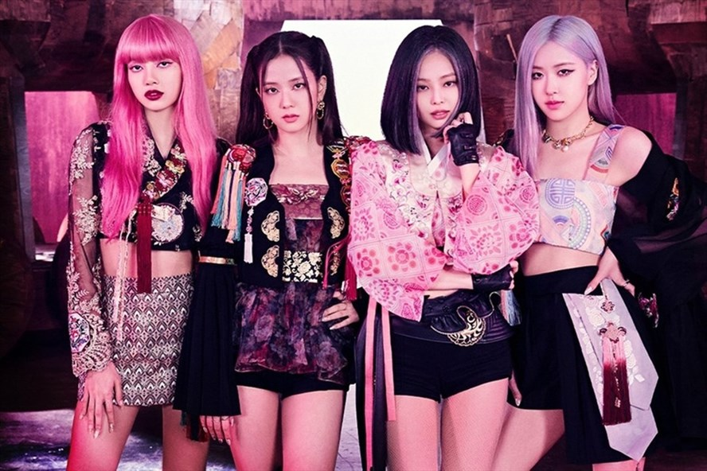

Sau một năm lưu diễn thế giới với world tour BORN PINK, BLACKPINK đã lập nên nhiều kỷ lục. Cụ thể, nhóm trở thành nhóm nhạc nữ có doanh thu từ tour lưu diễn cao nhất mọi thời đại. Là nhóm nhạc nữ Kpop đầu tiên headline lễ hội âm nhạc Coachella ở Mỹ và BST Hyde Park ở Anh. Chỉ thực hiện các đêm nhạc tại các sân vận động…
Dẫu vậy, cuộc vui nào cũng tàn. Tháng 9/2023, đêm diễn cuối cùng của world tour BORN PINK sẽ được tổ chức ở Seoul, như một vòng tròn khép kín vì “quê nhà Hàn Quốc” cũng là nơi đầu tiên mà BLACKPINK đã kích phát tour lưu diễn toàn cầu.
Trước thông tin BORN PINK chính thức chấm dứt, nhiều người hâm mộ tiếc nuối vì chưa có dịp xem thần tượng trực tiếp ngoài đời thật. Người khác lại vui mừng khi world tour chấm dứt, để các cô gái có dịp nghỉ ngơi sau khi lưu diễn suốt cả năm trời, và chuẩn bị cho những album mới.
Có lẽ không ai như BLACKPINK, không ra mắt quá nhiều ca khúc trong sự nghiệp, nhưng lại có thể lưu diễn cả năm trời với setlist ấy! Album BORN PINK là một ví dụ điển hình. Sau một thời gian dài im hơi lặng tiếng, không có bất kỳ hoạt động nào ngoài những sự kiện thời trang, thì nhóm nhạc nữ Kpop trở lại với album này cùng hai MV được đầu tư “khủng”. Là màn comeback năm 2022 của BLACKPINK nhưng nó kéo dài qua tận năm 2023 vì tour lưu diễn vòng quanh thế giới của nhóm.
Album BORN PINK là album chính thức thứ hai của nhóm, kể từ THE ALBUM năm 2020. Nói là chính thức vì BLACKPINK luôn có album thu thanh các bản live của những tour diễn, bên cạnh đó là một album dành riêng cho thị trường Nhật Bản năm 2018. Album BORN PINK được khai màn với sự ra mắt của single Pink Venom hôm 19/8/2022. Nó là MV có lượt xem cao nhất trong 24 tiếng mở màn của YouTube trong năm 2022.
BLACKPINK rất khôn ngoan khi dành màn diễn live Pink Venom đầu tiên cho sân khấu VMA 2022 ở Mỹ, giúp kích thích các fan muốn đi xem liveshow toàn cầu của các cô gái. Sau đó, hôm 16/9 thì single thứ hai Shut Down được ra mắt. Nhiều người thậm chí đánh giá Shut Down cao hơn cả Pink Venom vì phối hợp âm thanh violon La Campanella của Paganini trên nền nhạc hip hop thật nghệ thuật và mới lạ.
Chia sẻ về album BORN PINK, Lisa nói rằng ca khúc chủ đề Pink Venom nhằm “vạch ra tiêu chuẩn mới về những ca khúc sẽ ra mắt”. Rosé hưng phấn vì nhóm được thử nghiệm với nhiều âm thanh mới lạ. “Chúng tôi đã mau chóng quyết định thử nghiệm với những sự mới mẻ này – không thể chờ để biểu diễn cho các bạn”.
ong song với việc thông báo single và album mới, BLACKPINK cũng công bố lịch trình cho tour lưu diễn thế giới kế tiếp. Diễn ra từ tháng 10/2022 và kết thúc cuối năm 2023, đây là “tour lưu diễn thế giới hoành tráng nhất trong lịch sử của các nhóm nhạc Kpop nữ”, trích lời công ty quản lý YG Entertainment.
BORN PINK cũng là tour lưu diễn thứ ba của nhóm, sau BLACKPINK Arena Tour ở Nhật năm 2018 và In Your Area toàn cầu năm 2018–2020. Show diễn đầu tiên được dành tặng cho “sân nhà Hàn Quốc” Seoul. Tour lưu diễn kéo dài từ Mỹ qua châu Âu, châu Á và Úc. Ban đầu, BORN PINK dự kiến kết thúc tại Úc mùa hè 2023.
Nhưng trước tình cảm của fan dành cho bốn cô gái, lượng vé bán ra vượt dự kiến, cùng với setlist thay đổi vì Jisoo có tác phẩm solo đầu tay, BLACKPINK và YG Entertainment đã quyết định kéo dài tour lưu diễn.
Tháng Bảy, BLACKPINK đột ngột thông báo đến SVĐ Mỹ Đình ở Hà Nội. Đây sẽ là lần đầu tiên nhóm tới Việt Nam biểu diễn. Mùa thu 2023, BLACKPINK trở lại Bắc Mỹ, do đó chặng dừng chân này được gọi là “Encore”. Cuối cùng, vào tháng Chín, BLACKPINK trở lại Seoul, kết lại một năm lưu diễn thế giới của bộ tứ.
Nhiều người từng bàn tán liệu khi nào BLACKPINK mới kết thúc tour lưu diễn toàn cầu, thì nay, YG Entertainment và bốn cô gái đã đưa ra đáp án khi ghi chú “Finale”, có nghĩa là show cuối cùng, bên cạnh hai đêm diễn ở Hàn Quốc. Nếu bạn vẫn chưa có cơ hội xem BORN PINK trực tiếp, Seoul là cơ hội cuối cùng của bạn.
Xuyên suốt sự nghiệp, BLACKPINK nhiều lần đối mặt với tin đồn sắp tan rã. Trước khi world tour BORN PINK diễn ra, tin đồn này từng lan truyền vì bốn cô gái tập trung cho các hoạt động thời trang riêng lẻ. Bây giờ, khi tour lưu diễn này gần đi đến hồi kết, tin đồn này lại dấy lên trước nghi vấn rằng Lisa, Jennie không tái ký hợp đồng với công ty chủ quản YG Entertainment. Nhiều thành viên của hội fan BLINK lo sợ rằng đây sẽ là world tour cuối cùng của nhóm.
Xuyên suốt sự nghiệp, BLACKPINK nhiều lần đối mặt với tin đồn sắp tan rã. Trước khi world tour BORN PINK diễn ra, tin đồn này từng lan truyền vì bốn cô gái tập trung cho các hoạt động thời trang riêng lẻ. Bây giờ, khi tour lưu diễn này gần đi đến hồi kết, tin đồn này lại dấy lên trước nghi vấn rằng Lisa, Jennie không tái ký hợp đồng với công ty chủ quản YG Entertainment. Nhiều thành viên của hội fan BLINK lo sợ rằng đây sẽ là world tour cuối cùng của nhóm.
Thực chất, việc các thành viên không cùng công ty quản lý không quá quan trọng. Nhiều nhóm nhạc vẫn có thể hoạt động cùng nhau dù mỗi thành viên đã về một ngôi nhà khác. Tiêu biểu như SNSD, MAMAMOO hay GOT7. Ngay cả 2NE1, cựu girl group của YG Entertainment, cũng đã tái hợp ở sân khấu Coachella mà không bị công ty cũ dị nghị. Hãy cùng hy vọng BLACKPINK sẽ tiếp tục mang tới nhiều đêm diễn hoành tráng nữa trong tương lai.

.jpg)
.jpg)
Theo thông tin chính thức từ YG Entertainment, vé concert BLACKPINK tại Hà Nội sẽ được mở bán vào lúc 12h00 trưa ngày 7/7/2023 tới đây. Theo đó, nhóm nhạc BlackPink sẽ tổ chức 2 đêm diễn vào ngày 29/7 và 30/7 tại SVĐ Mỹ Đình với sức chứa 40.000 chỗ ngồi.
Thông tin về concert BlackPink đang thu hút nhiều sự quan tâm của các fan hâm mộ. Hiện tại, cuộc chiến săn vé concert cùng những thông tin về giá vé đang nóng lên từng giờ, từng ngày tại Việt Nam. Hãy cùng tìm hiểu chi tiết về giá vé và cách thức mua vé concert BlackPink tại Hà Nội trong các phần dưới đây.
Hiện cổng đặt vé trực tuyến của concert Born Pink tại các kênh bán vé chính thức chưa mở nên người hâm mộ chưa thể đặt online. Đến ngày 7/7/2023 cổng đặt vé concert BlackPink sẽ chính thức được mở bán. Mọi người có thể chuẩn bị tinh thần săn vé ngay từ giờ.